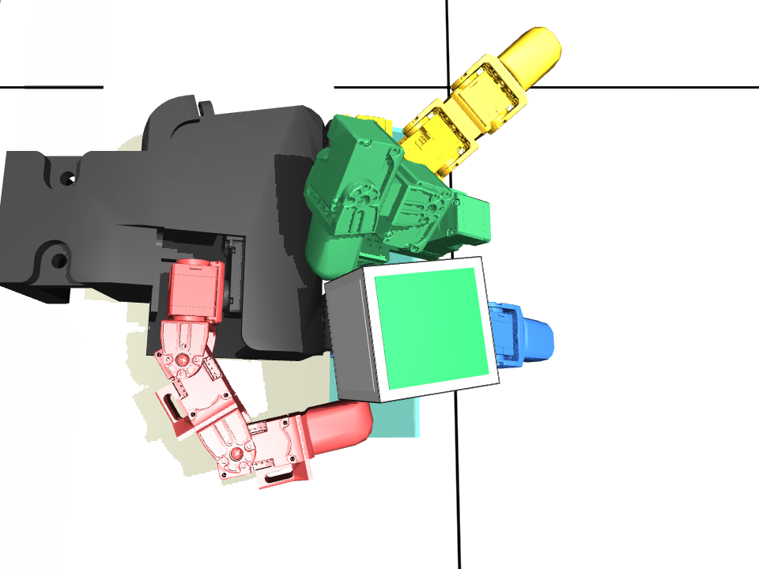
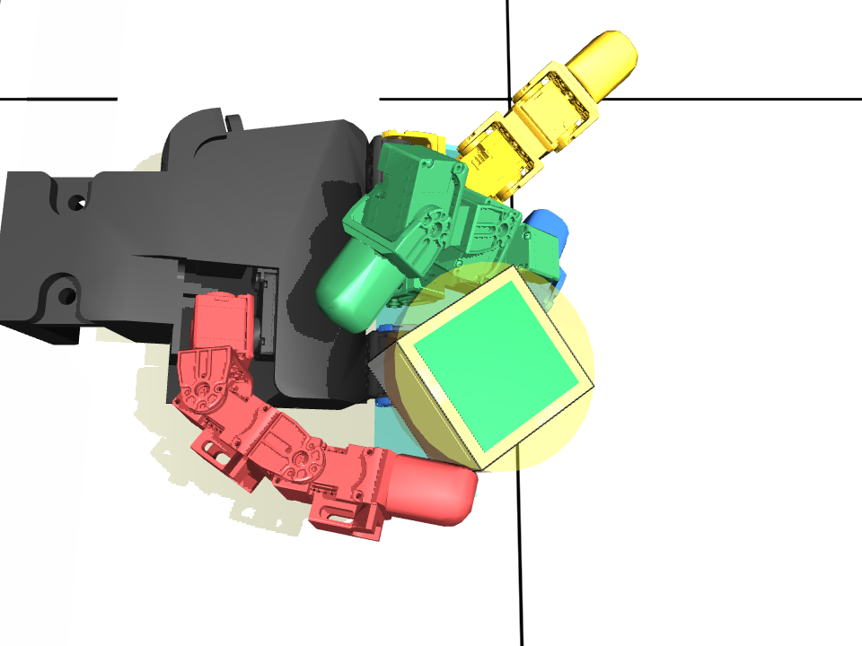

저장된 자유 큐브 시뮬레이션이다. 마지막 회전량은 88.84도다. 회전 뒤 공통 파지와 윗단 공간 검사는 아직 통과하지 못했다. 실제 로봇에서의90도 성공 영상이 아니다.
파랑=검지, 초록=중지, 노랑=약지, 빨강=엄지. 큐브 면 색과 주황 원통은 방향과 윗단 공간을 보이는 표시이며 물리 형상을 바꾸지 않는다.
앞의 기존 경로에서는 약63도까지 돌아가고, 추가 경로가 나머지를 진행한다. 완벽한 모델 자세와 접촉 정보를 이용해 계산한 관절 목표를 저장 후 재생했으며 실물용 제어기는 아니다.

